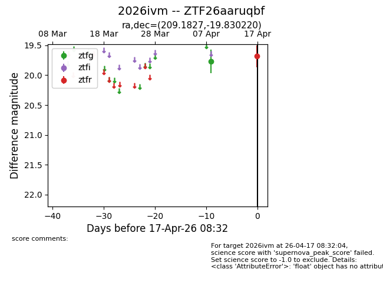
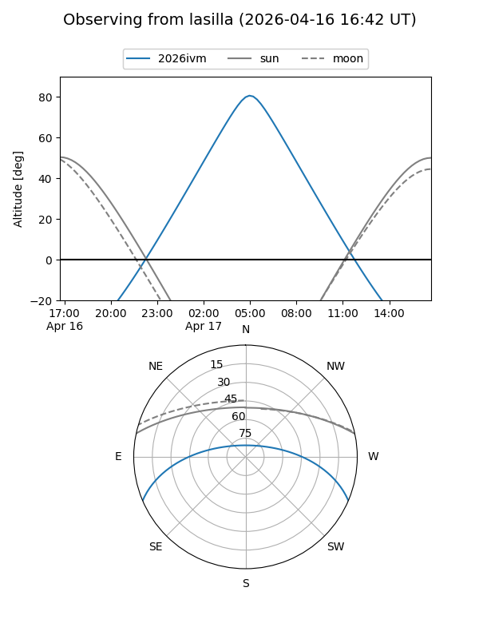
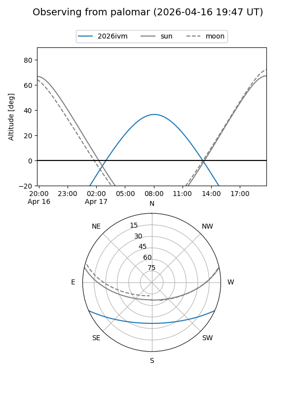

2026ivm
Target 2026ivm at 2026-04-17 08:37
Aliases and brokers:
FINK: link
Lasair: link
ALeRCE: link
TNS: link
YSE: link
alt names
ZTF26aaruqbf (ztf,fink_ztf)
2026ivm (tns,yse)
Coordinates:
equatorial (ra, dec) = 209.1827,-19.83022
equatorial (HMS+DMS) = 13:56:43.86,-19:49:48.79
galactic (l, b) = (323.2625,+40.44978)
Flags:
Photometry:
last ztfg=19.77, ztfr=19.68
1 ztfg, 1 ztfr detections
Lightcurve

Visibility


Additional plots